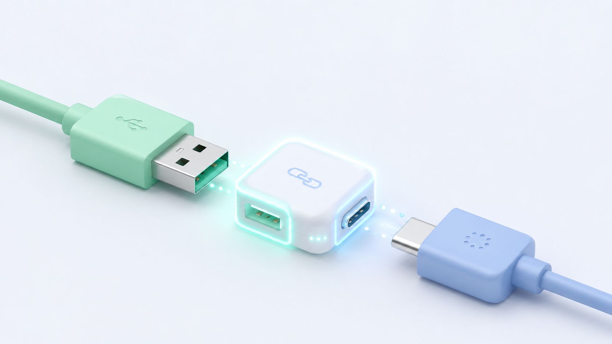

1. Adapter

Explicación del Código
¿Qué hace? Tenemos un sistema europeo que espera un enchufe de clavija fina (`EnchufeEuropeo`), pero solo tenemos uno americano (`EnchufeAmericano`). El `AdaptadorAmericanoAEuropeo` implementa la interfaz europea pero internamente llama al método del enchufe americano.
¿Cómo aplica el patrón? Convierte la interfaz de una clase existente (el enchufe americano) en la interfaz que el cliente espera (la europea), logrando que ambos trabajen juntos sin modificar el código original del enchufe americano.
// Interfaz esperada
interface EnchufeEuropeo { void conectarFino(); }
// Clase incompatible existente
class EnchufeAmericano {
void conectarGrueso() { System.out.println("Conectado con clavijas planas"); }
}
// El Adaptador
class AdaptadorAmericanoAEuropeo implements EnchufeEuropeo {
EnchufeAmericano enchufe = new EnchufeAmericano();
public void conectarFino() {
enchufe.conectarGrueso(); // Traduce la llamada
}
}
Consola de Salida
Esperando ejecución...